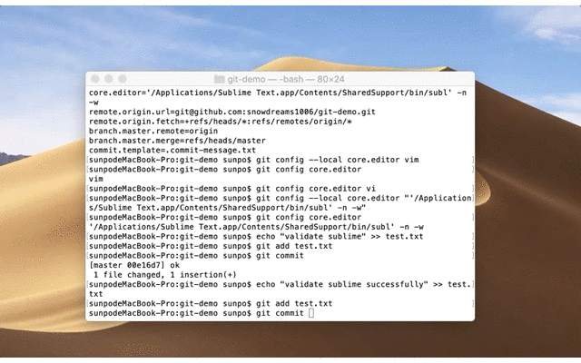
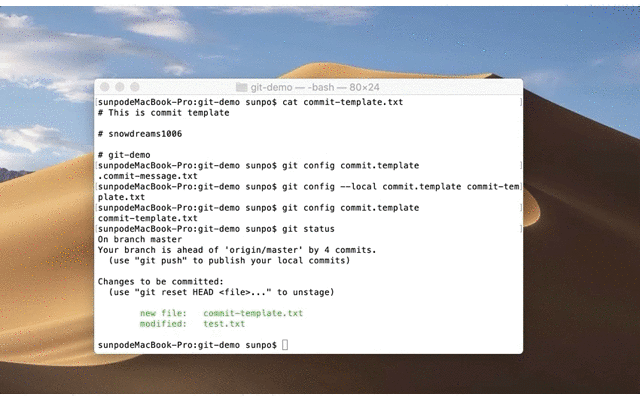

1. 个性化 git
1.1. 前情概要
初识 git 时,我们就已经接触过 git 的基本配置,使用 git config 命令配置用户名和邮箱:
# 配置当前项目(`local`)的用户名(`snowdreams1006`)
git config --local user.name "snowdreams1006"
# 配置当前项目(`local`)的邮箱(`snowdreams1006@163.com`)
git config --local user.email "snowdreams1006@163.com"
快速回忆一下配置的相关语法:
# 查看默认全部配置: `local>global>system`
git config --list
# 查看当前项目配置,等同于 `.git/config` 文件
git config --local --list
# 查看当前用户配置,等同于 `~/.gitconfig` 文件 或 `~/.config/git/config` 文件
git config --global --list
# 查看当前系统配置,等同于 `/etc/gitconfig` 文件
git config --system --list
man git-config查看帮助文档,git的配置文件是普通文本,也可以直接编辑.
1.2. 高频配置
总体来说,git 的配置项基本分为两类: 客户端和服务端.其中大部分属于客户端配置, 除非使用自己搭建私服,否则没机会手动配置服务端(第三方服务器基本都支持可视化配置,比如禁止强制推送等配置).
1.2.1. alias 别名
熟悉 linux 操作的小伙伴对 ll 这个命令可能再熟悉不过了,是 ls -l 的缩写,称之为别名.
git 也支持别名,有个别名我们可以将常用的命令都缩短,大大降低出概率,提高工作效率.
# `git checkout` 缩写成 `git co`
git config --global alias.co checkout
# `git commit` 缩写成 `git ci`
git config --global alias.ci commit
# `git branch` 缩写成 `git br`
git config --global alias.br branch
如此一来,以后再也不用担心打错字了,简化命令,懒人至上!
1.2.2. core.editor 编辑器
默认情况下,git 使用的是 $VISUAL 或 $EDITOR 配置的文本编辑器,如果没有设置,则调用 vi 编辑器创建和编辑文本信息.
查看当前编辑器配置项:
# 查看编辑器配置项: 若没配置过,则无内容输出,已配置过的话,会输出相应编辑器信息
git config core.editor
假设使用 sublime 作为默认编辑器,那么便可如下设置:
# `Mac` 系统如下设置: 设置成自己的 `Sublime` 的安装路径
git config --local core.editor "'/Applications/Sublime Text.app/Contents/SharedSupport/bin/subl' -n -w"
# `Windows` 系统如下设置: 设置成自己的 `Sublime` 的安装路径
git config --local core.editor "'F:\Sublime Text 3 sublime text.exe' -n -w"
此时再次查看编辑器配置项应该会输出刚才配置信息,接下来我们验证下编辑器的效果:

查看提交历史,已经提交成功(之前备注信息是在命令行中直接输入的,而现在是在编辑器中编辑)
$ git log --pretty=oneline --abbrev-commit
43fa8aa (HEAD -> master) validate sublime successfully
00e16d7 ok
2400f11 git config --local core.editor "'/Applications/Sublime Text.app/Contents/SharedSupport/bin/subl' -n -w"
0d60cb8 ok
8fe5aba (origin/master, origin/HEAD) Merge branch 'master' of github.com:snowdreams1006/git-demo
$
如果只是输入简单备注,根本用不到编辑器,若提交备注有格式化要求时再手动输入就显得力不从心了!
1.2.3. core.template 提交模板
如果你需要格式化提交备注,那么这种情况下模板文件最好不过了,和自定义的编辑器一起搭配,这样就能约束自己和他人按照既定格式规范填写提交备注,方便以后统一管理.
查看当前提交模板配置:
git config commit.template
假设你在当前项目下创建 commit-template.txt 模板文件,内容如下:
# This is commit template
# snowdreams1006
# git-demo
将编辑好的模板文件设置成提交默认信息,需要如下设置:
git config --local commit.template commiit-template.txt
此时再次运行 git config commit.template 查看已配置提交模板,现在看一下实际效果:

查看提交历史,当然也提交成功啦,可根据实际需求定制适合自己的提交模板.
$ git log --abbrev-commit
commit a2ca3f0 (HEAD -> master)
Author: snowdreams1006 <snowdreams1006@163.com>
Date: Wed Mar 27 16:22:18 2019 +0800
ok
myself
yes
commit 43fa8aa
Author: snowdreams1006 <snowdreams1006@163.com>
Date: Wed Mar 27 14:58:36 2019 +0800
validate sublime successfully
commit 00e16d7
Author: snowdreams1006 <snowdreams1006@163.com>
Date: Wed Mar 27 14:56:20 2019 +0800
ok
commit 2400f11
git还支持其他配置,暂时不一一介绍了,详情请参考在线帮助文档:man git-config